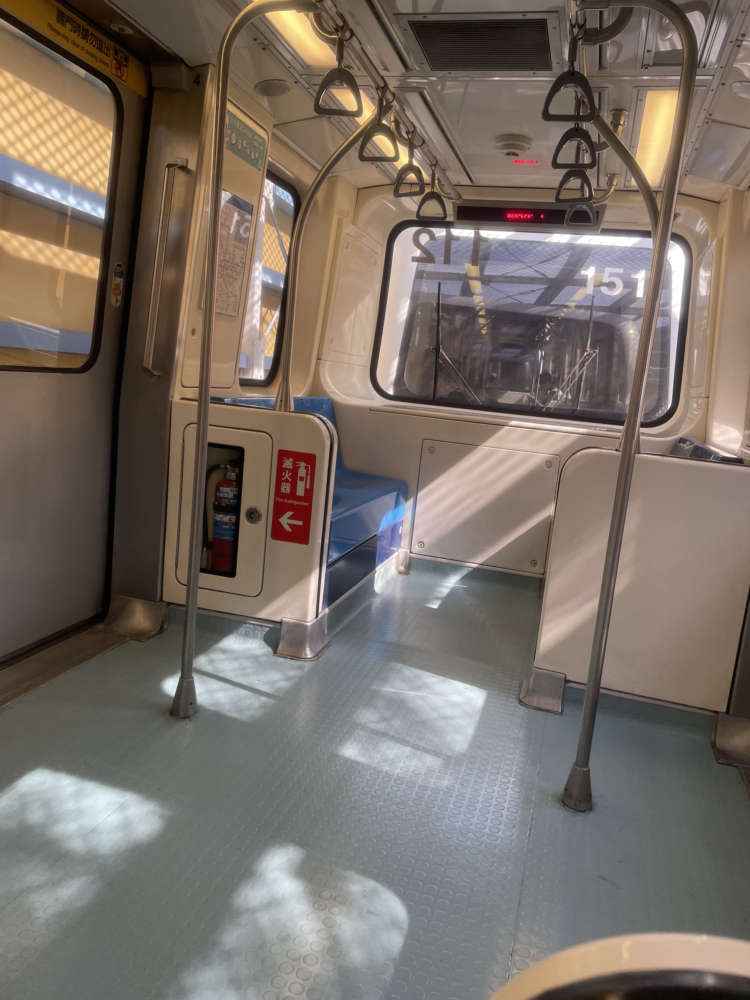
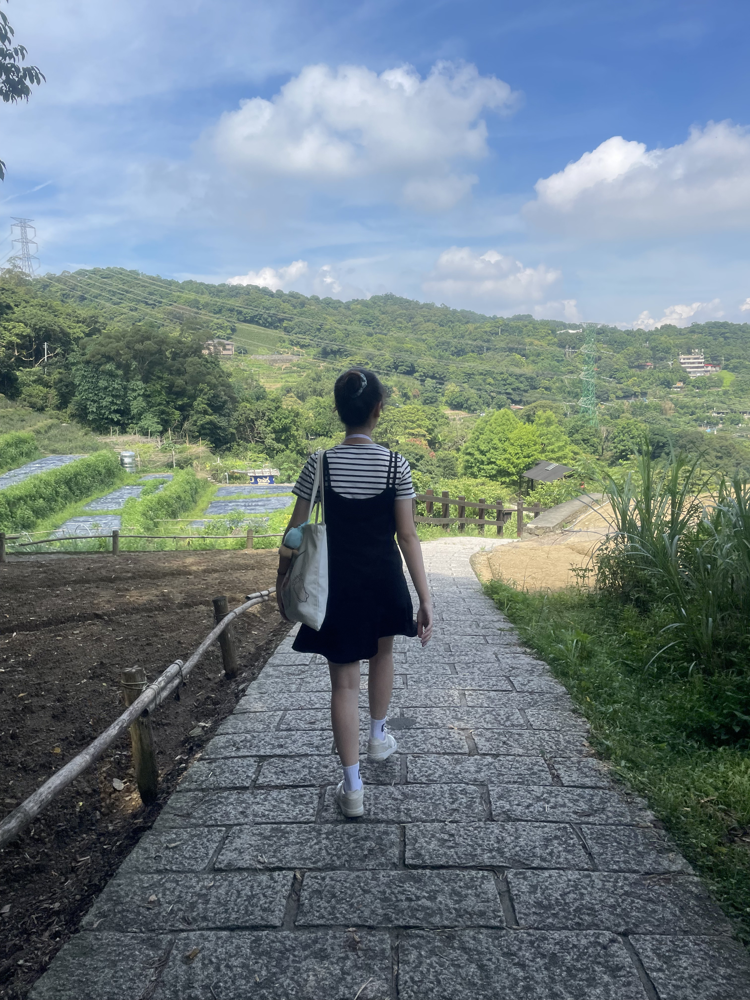
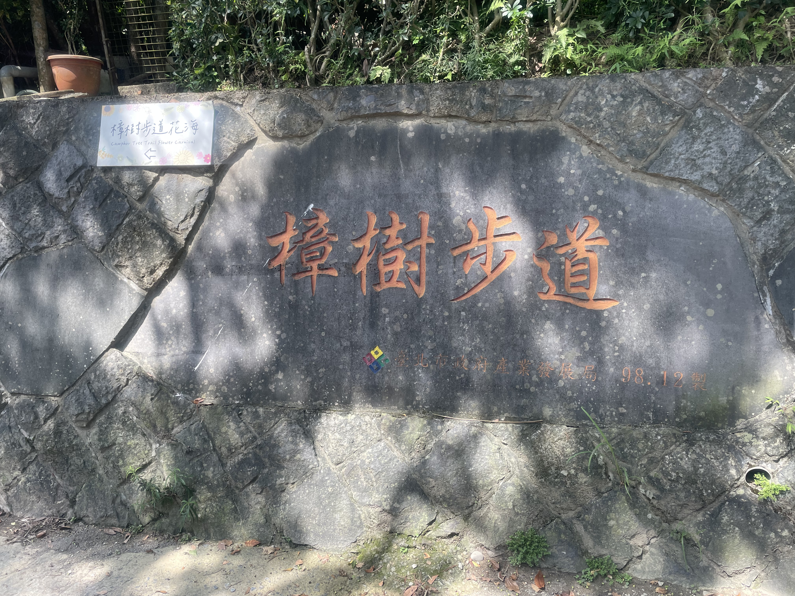
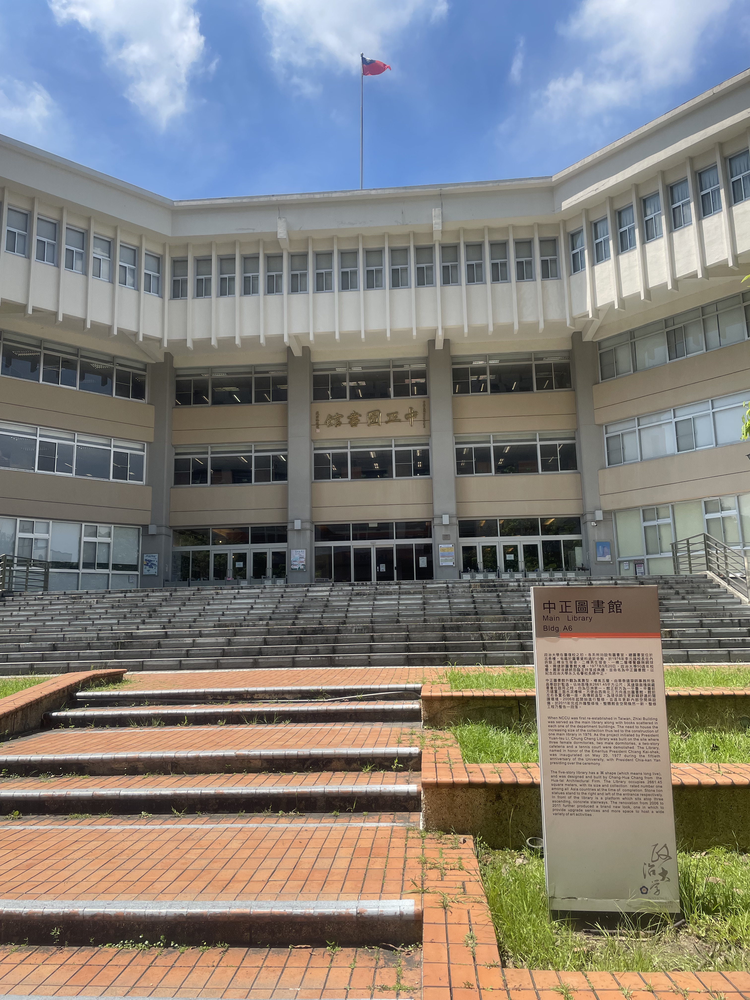
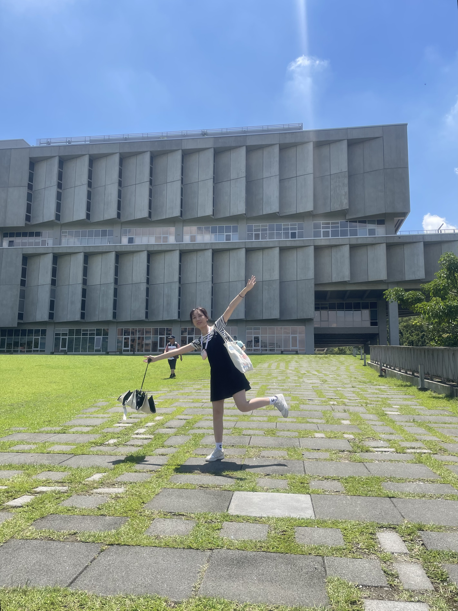
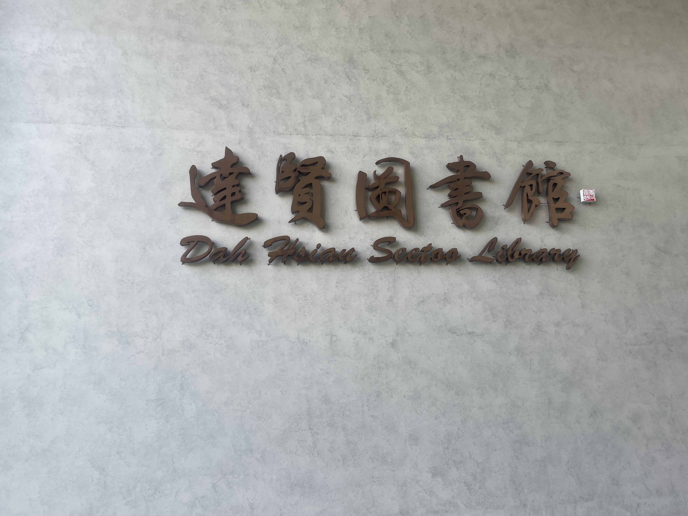
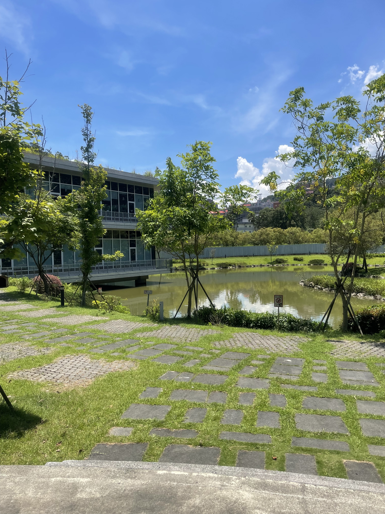

台北市文山區
基本資訊
位於臺北市最南端，是臺北市自然環境保存最完整、綠地比例最高的行政區之一。區域緊鄰新北市新店區與深坑區，地形以丘陵與山地為主，與臺北市其他高度都市化的行政區形成鮮明對比。 文山區的發展與自然地景密切相關。早期以農業與茶產業為主，至今仍可在貓空一帶看見茶園與傳統產業的痕跡。隨著都市擴張，文山區逐漸發展為以住宅與教育機能為主的區域，環境相對安靜，生活節奏較為緩慢。 在交通方面，文山區以捷運文湖線與新店線銜接市中心，使居民得以在保有自然環境的同時，仍具備通勤便利性。區內同時擁有多所學校與研究機構，形成穩定的生活與學習氛圍。
主要景點
- 貓空地區，以茶園景觀、登山步道與景觀餐廳聞名，並可搭乘貓空纜車俯瞰臺北盆地，是結合觀光與傳統茶文化的重要場域
- 指南宮是文山區重要的宗教與文化地標，位於山坡高處，除了承載道教信仰，也因視野開闊而成為觀景據點
推薦景點
| 樟樹步道
鄰近貓空一帶，是一條結合自然生態與休閒健行功能的登山步道。步道沿線多為樟樹與闊葉林植被，環境清幽，林蔭遮蔽充足，行走其間可感受到與市區截然不同的靜謐氛圍。 樟樹步道坡度相對平緩，路線規劃清楚，適合一般民眾與親子健行。沿途設有階梯、欄杆與休憩平台，部分路段可眺望山林景觀，天氣晴朗時也能遠望臺北市區。步道四季景色各異，春夏綠意盎然，秋冬則多了一份沉靜，常見居民前來散步、運動或親近自然。
| 政治大學
是臺灣具代表性的國立綜合大學之一。學校創立於 1927 年，最初以政治與行政人才培育為核心，戰後在臺灣復校並逐步發展為涵蓋人文、社會科學、商學、外語與傳播等領域的重要學術機構。 政大的校園依山傍水，鄰近景美溪與貓空山區，自然環境優良，校內建築與綠地錯落，形成開放且具人文氣息的學習空間。校園中如四維道、指南溪沿岸與達賢圖書館，不僅是學生學習與交流的重要場所，也成為許多民眾散步與參訪的景點。 在學術特色上，政治大學以政治學、外交、國際關係、新聞傳播、商學與外國語文等領域聞名，並長期推動國際交流與跨領域研究。整體而言，國立政治大學結合深厚學術傳統與自然校園環境，不僅是高等教育重鎮，也展現文山區人文與學術氛圍的重要象徵。






